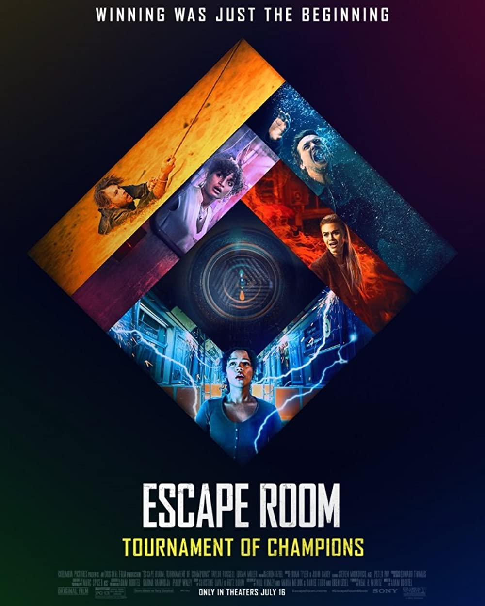

Escape Room:
Tournament Of Champions

The sequel to a film I thought I would enjoy, but in the end I was fairly disappointed in how the entire film plays out. The film isn't terrible, but it felt like it fell short on many things it could have exceeded in.
Maybe the reason it fell flat was because, more than likely, this was just a way for them to make more money while banking in on the craze of escape rooms. Now don't get me wrong, I too enjoy escape rooms, and the thought of that one may be of nefarious intent, is scary. But in the end they could've just left this film out entirely.
Or even, they could have brought this backstory they so graciously gave us in the second film, in the first instead. Because honestly, I did think the backstory was interesting. But I also know the backstory was merely a way for them to milk the cow some more for a third film.